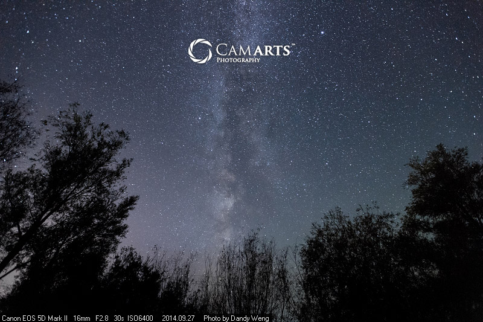
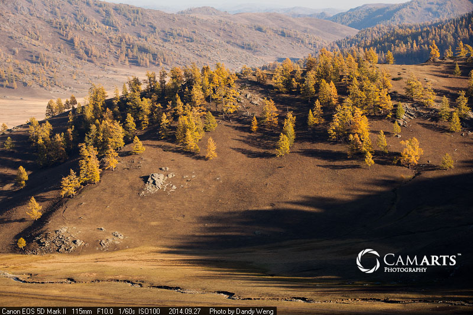
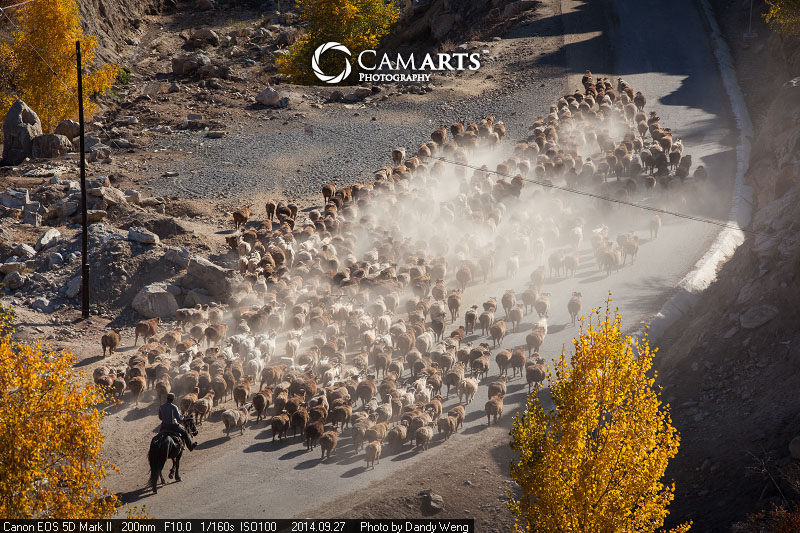
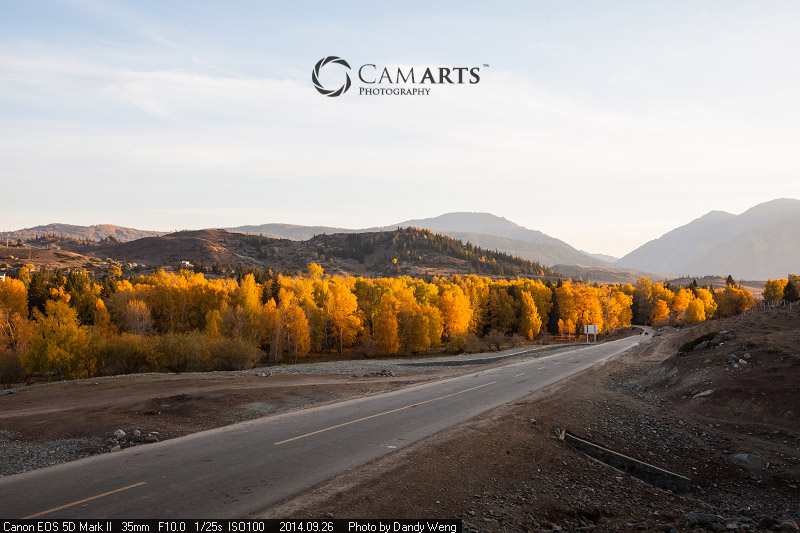
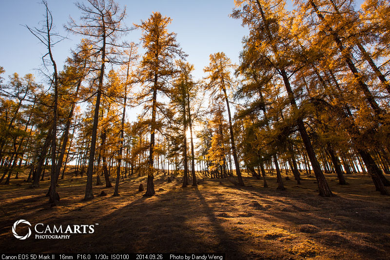

夜色布尔津
拍摄完喀纳斯，便踏上回程之路。回到布尔津附近时已是深夜。没有月光，除了远处县城依稀的灯光和偶尔驶过的车灯外，便是一片漆黑，伸手不见五指，只能在满天繁星的映衬下依稀看见些随风而动的树影。而这，正是拍摄银河的最佳时机。
 查看本辑全部作品 >喀纳斯印象
终于来到喀纳斯——中国最西北的角落，此次西北之行可到达的最远处。在这个纬度高达 48 度的地方，山坡上的植被更加茂密；太阳下落得很慢，阳光以一个非常低的角度横扫过来，跨过群山，透过树木，在地上都投出长长的影子，非常好看。
 查看本辑全部作品 >冲乎尔牧场
告别禾木乡，继续向喀纳斯方向前行，途中经过冲乎尔乡。这里是一个天然牧场，坐落在小盆地，群山环抱，乡民主要以放牧为生。果然，不时就能看见牧羊人赶着几百头“阿勒泰大尾羊”在公路上浩浩荡荡地走着，一路扬起滚滚烟尘，甚是壮观。
 查看本辑全部作品 >禾木掠影
一路北行，来到禾木乡。这里几乎是中国的最西北角，与哈萨克斯坦、俄罗斯和蒙古等三国接壤。禾木地广人稀，和我去过的许多边境小城很像。穿行而过，不见几户人家，除了几个正在建设的小旅馆外，能零星看到的只是几个小木屋和蒙古包。
 查看本辑全部作品 >北疆树林
继续在铁热克提附近沿着蜿蜒的小道行摄，不知不觉间便绕到这座高山的另一侧。这里的杨树长得更高耸茂密，西斜的阳光恰到好处地将树梢照得金黄透亮，一道道树影投射在绒毛地毯般的草甸上，构成近乎完美的光影，令人心旷神怡，不舍离。
 查看本辑全部作品 >